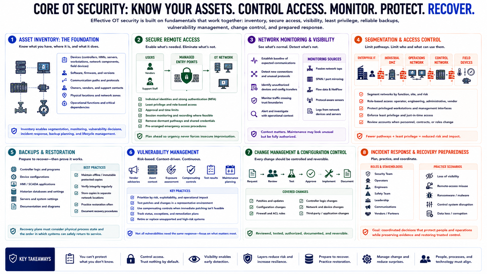

Core OT Security Practices
Connecting to LMS... Progress: in progress

Narration
Core OT security begins with asset inventory. Record devices, software, firmware, communication paths, owners, vendors, physical locations, operational functions, and critical dependencies. Inventory is not merely a spreadsheet exercise. It supports segmentation, monitoring, vulnerability decisions, incident response, backup planning, and lifecycle management.
Secure remote access through managed entry points. Use individual identities, strong authentication, least privilege, approval, time limits, and session monitoring where feasible. Remove dormant pathways and shared credentials. Coordinate emergency access procedures in advance so operational urgency does not force insecure improvisation.
Network monitoring provides visibility without necessarily touching sensitive devices. Establish a baseline of expected communications, then investigate new connections, unusual protocols, unauthorized devices, configuration transfers, and traffic crossing trust boundaries. Monitoring must be interpreted with operational context; maintenance activity may look unusual but be fully authorized.
Segmentation limits pathways, while access control limits who and what can use them. Apply role-based privileges to operator, engineering, administrative, and vendor functions. Protect privileged workstations and management interfaces. Review accounts when personnel, contracts, and job responsibilities change.
Backups should cover controller logic, device configurations, HMI and SCADA applications, historian settings, servers, and the documentation needed to rebuild. Store protected copies, verify integrity, and practice restoration. Recovery plans must account for physical process state and the order in which systems can safely return to service.
Vulnerability management in OT combines vendor advisories, asset context, exposure, compensating controls, test results, and maintenance planning. Change control ensures that patches, configuration updates, firewall rules, and logic changes are reviewed, tested, authorized, documented, and reversible.
Finally, incident response plans should define roles for security personnel, operators, engineers, safety teams, leadership, communications, and vendors. Practice scenarios involving loss of visibility, remote-access misuse, ransomware, and control-system disruption. The goal is coordinated decision-making that protects people and operations while preserving evidence and restoring trusted control.